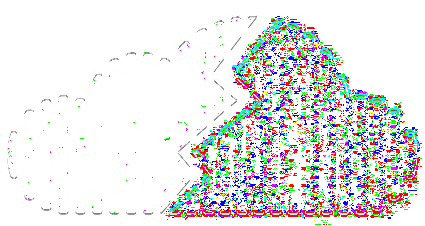

SoundCloud Charts
Поиск музыки
Стриминг треков и воспроизведение локальной медиатеки

hurtmusicСтриминг треков и воспроизведение локальной медиатеки
Синхронизированный текст LRCLIB
Загрузка текста песни...
Треки перетекают друг в друга без тишины в конце.
Загрузка…
Версия 1.1.1 (Windows x64)
Нативный независимый плеер для SoundCloud и офлайн-медиатеки с Моей волной, умным поиском и чистым звуком.